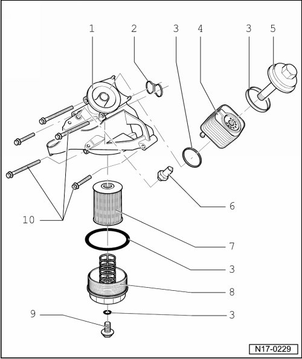

Oil Filter Housing: Service and Repair
Oil Filter Housing, Assembly Overview

1 Oil filter housing/left engine bracket
• To remove, the left and right engine mount bracket must be loosened from the engine mount --> [ Engine Bracket and Mount ] Service and Repair.
2 Seal
• Replace
• Oil before assembling
3 Oil cooler gasket
• Replace
• Oil before assembling
4 Oil cooler
• Ensure sufficient clearance to surrounding components
• See note --> [ Lubrication System ] Description and Operation.
• Coolant hose connection diagram --> [ Coolant Hose Connection Diagram ] [1][2]Cooling System.
5 Oil cooler cover, 25 Nm
6 Oil pressure switch (F1), 20 Nm
• Black
• Switch point at 1.4 bar
• If sealing ring is leaking cut open and replace.
• Checking --> [ Oil Pressure and Oil Pressure Switch, Checking ] Testing and Inspection.
7 Oil filter element
• Observe change intervals
• See note --> [ Lubrication System ] Description and Operation.
8 Oil filter lower part, 25 Nm
• Drain before removing
• With bypass valve opening pressure: 2.50 bar pressure
9 Oil drain plug, 10 Nm
10 23 Nm